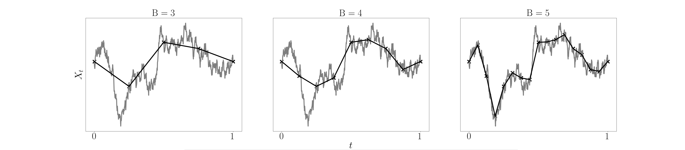
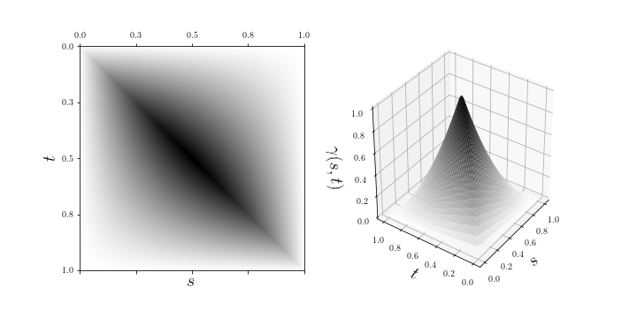
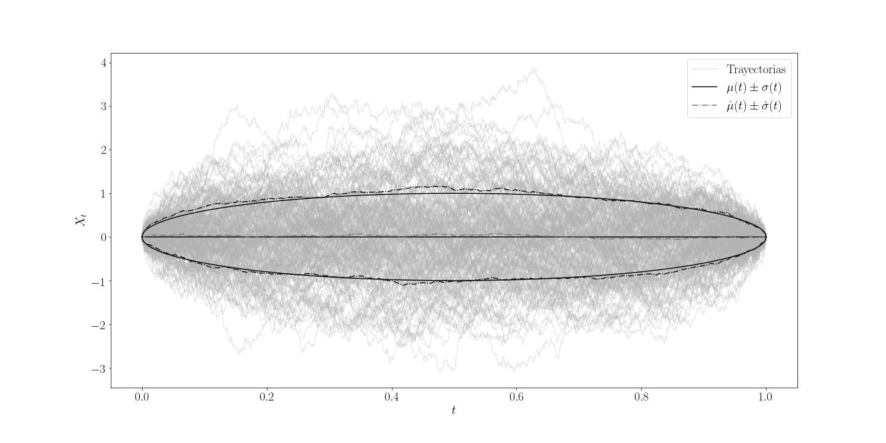
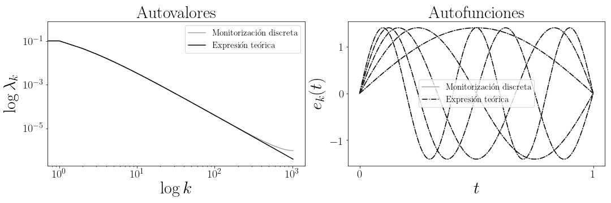
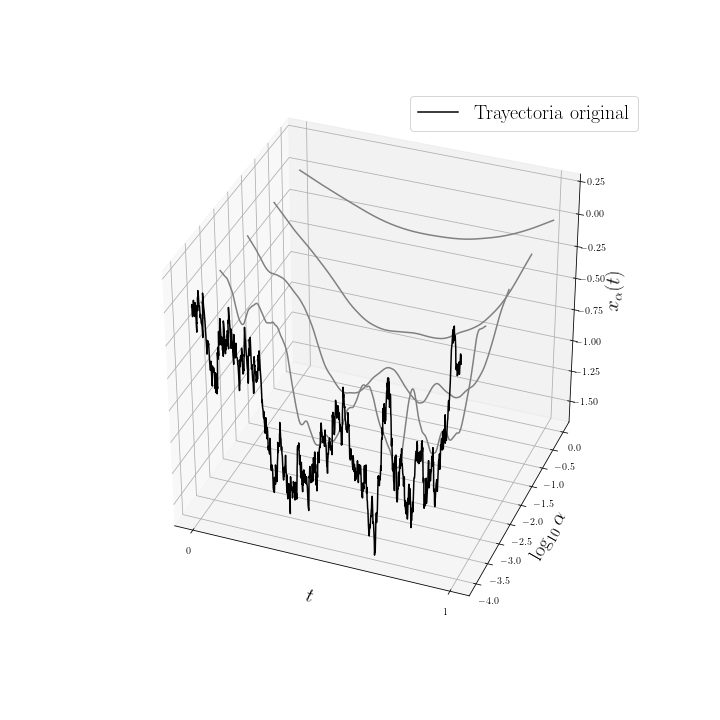
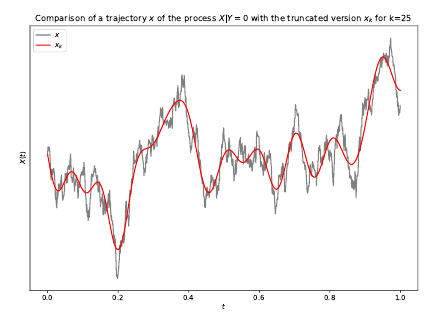
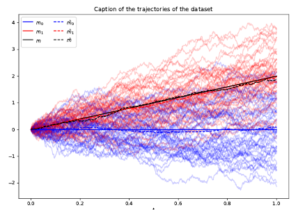
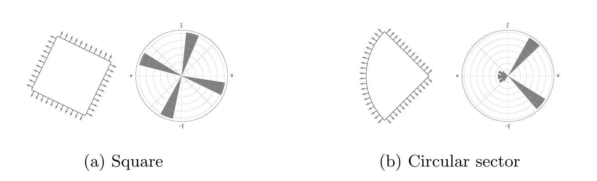
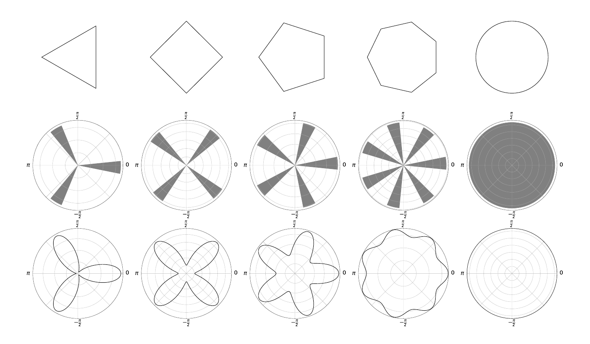
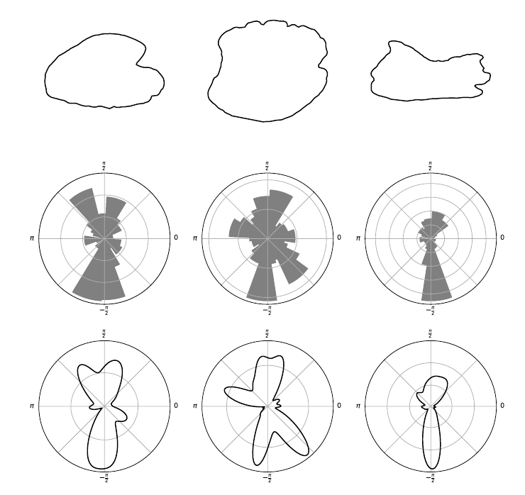

Experiencia
Especialista en Gestión de Riesgo Financiero y ALM | Diseño y Desarrollo Full-Stack | Consultoría Cuantitativa.
- Jefe de proyecto en múltiples implantaciones a medida de soluciones de ALM
- Diseño y desarrollo full-stack en software de gestión de riesgo financiero
- Consultoría y análisis cuantitativo en proyectos de riesgo financiero (Riesgo base, crédito, liquidez)
- Generación de informes regulatorios de riesgo financiero
- Mantenimiento de herramientas y procesos de ETL a medida para ALM
- Computación de alto rendimiento, cálculo intensivo con datos a gran escala
Líder de proyecto de procesos de ETL e instalación personalizada, diseño, desarrollo e implantación de la aplicación QALM, software crítico para cálculos intensivos con datos a gran escala para la gestión de activos y pasivos (ALM). Procesamiento, análisis y modelado de datos financieros para la evaluación de riesgo de tipo de interés y de riesgo de liquidez, y generación de informes regulatorios.
Habilidades
- Liderazgo
- Trabajo en equipo
- Comunicación efectiva
- Gestión del tiempo
- Pensamiento crítico
- Resolución de problemas
Herramientas
- Python
- Java
- Git
- C
- Latex
- VBS
- Spark
- Docker
- Maven
- Jenkins
- Javascript
- React
Proyectos

Módulo JavaScript que implementa generadores de números pseudoaleatorios con la capacidad de extraer muestras de una gran variedad de distribuciones de probabilidad. Randlibjs es una potente biblioteca numérica diseñada para proporcionar una amplia gama de distribuciones de números aleatorios de forma eficiente y matemáticamente correcta.
Punto de acceso en python para la API Rest de EMT (Buses y BiciMad). La EMT es la empresa de transporte público de la ciudad de Madrid. Permite obtener información relevante del servicio e información en vivo del mismo (tiempos de espera, ubicaciones de paradas, disponibilidad de bicicletas y estaciones, etc.).
Publicaciones
Un conjunto de dados es no transitivo si los dados que contiene tienen la propiedad de obtener un número mayor que otros dados en el conjunto más de la mitad de las veces, a la vez que obener un número menor que otros dados en el conjunto más de la mitad de las veces. Es decir cada dado "gana" a otros dados, pero también hay otros dados que le "ganan" a él, lo que significa que la propiedad de los dados de "ganar" no es transitiva. La estructura de estos dados no transitivos es compleja y poco intuitiva.
Algunos casos particulares de estos dados no transitivos se han descubierto con el tiempo. En este artículo, una expresión general para obtener conjuntos de dados de cualquier tamaño es descrita y estudiada. También se estudian las propiedades de estos conjuntos, que describen un objeto matemático muy curioso, bello y poco intuitivo, con unas simetrias muy poco comunes.
A continuación se muestran un par de casos particulares de estos conjuntos de dados, estos dados se pueden construir con tetraedros y cubos (dados de toda la vida). Se puede entrever la estructura simple y a la vez fasciante de esta generalización de dados no transitivos.
N=4
| A: | 1 | 8 | 12 | 14 |
| B: | 2 | 5 | 11 | 15 |
| C: | 3 | 6 | 9 | 16 |
| D: | 4 | 7 | 10 | 13 |
Se puede comprobar que B>A, C>B, D>C y A>D, donde "X>Y" significa que la probabilidad de que el dado X obtenga un resultado mayor que el dado Y es mayor que la probabilidad de que el dado Y obtenga un resultado mayor que el dado X.
N=6
| A: | 1 | 12 | 17 | 22 | 28 | 33 |
| B: | 2 | 7 | 18 | 23 | 29 | 34 |
| C: | 3 | 8 | 13 | 24 | 30 | 35 |
| D: | 4 | 9 | 14 | 19 | 25 | 36 |
| E: | 5 | 10 | 15 | 20 | 26 | 31 |
| F: | 6 | 11 | 16 | 21 | 27 | 32 |
De manera similar se puede comprobar que B>A, C>B, D>C, E>D, F>E y A>F.

Puedes descargar el articulo en inglés este enlace.
Trabajo final del Máster Universitario en Investigación e Innovación en Inteligencia Computacional y Sistemas Interactivos. Un análisis computacional sobre la representación espectral (en el espacio de frecuencias) de varios procesos gaussianos en tiempo continuo y sus trayectorias. Se estudian núcleos como movimiento browniano, puente browniano, Ornstein-Uhlenbeck, función de base radial (RBF), Matérn y exponencial.




Trabajo final del Máster Universitario en Matemáticas y Aplicaciones. Un estudio sobre la regularización de datos funcionales y su integración en reglas óptimas de clasificación para procesos gaussianos en tiempo continuo.



Trabajo final del Doble Grado en Matemáticas e Informática. Un estudio sobre la codificación de la forma de los contornos de objetos a través de datos direccionales, con una aplicación a un problema de clasificación con datos reales. Presentado en la 27ª Conferencia Internacional de Redes Neuronales Artificiales (ICANN 2018 ) en Rodas, Grecia en octubre de 2018.


